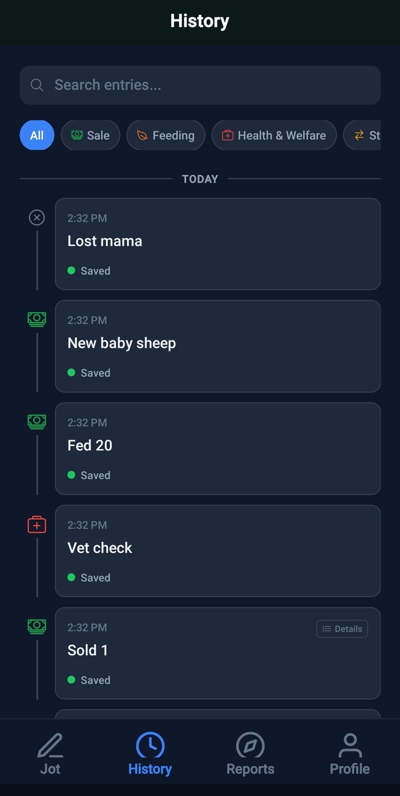
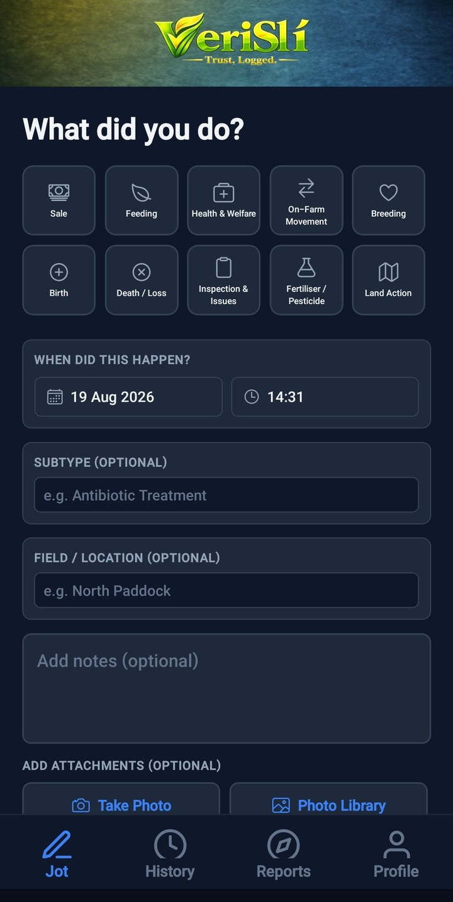
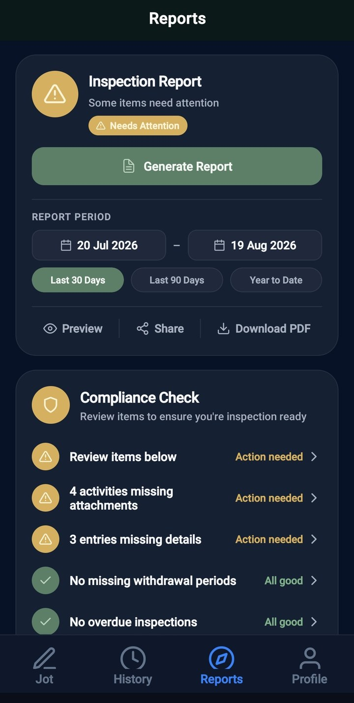
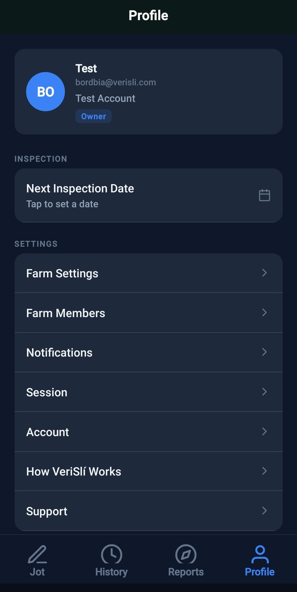
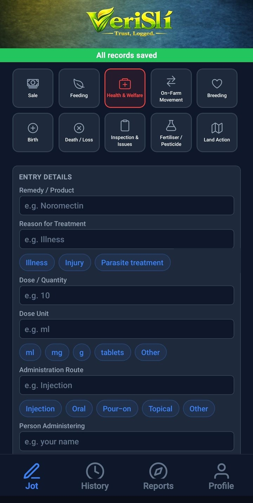
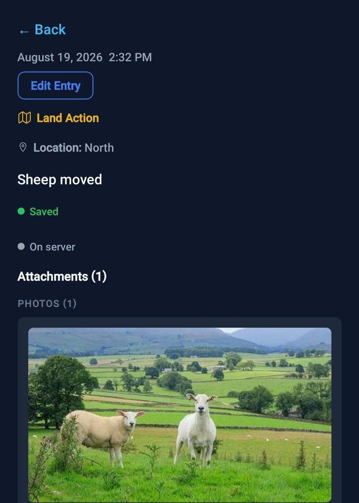
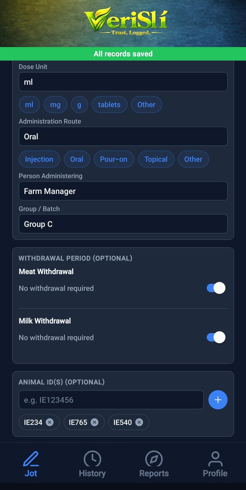
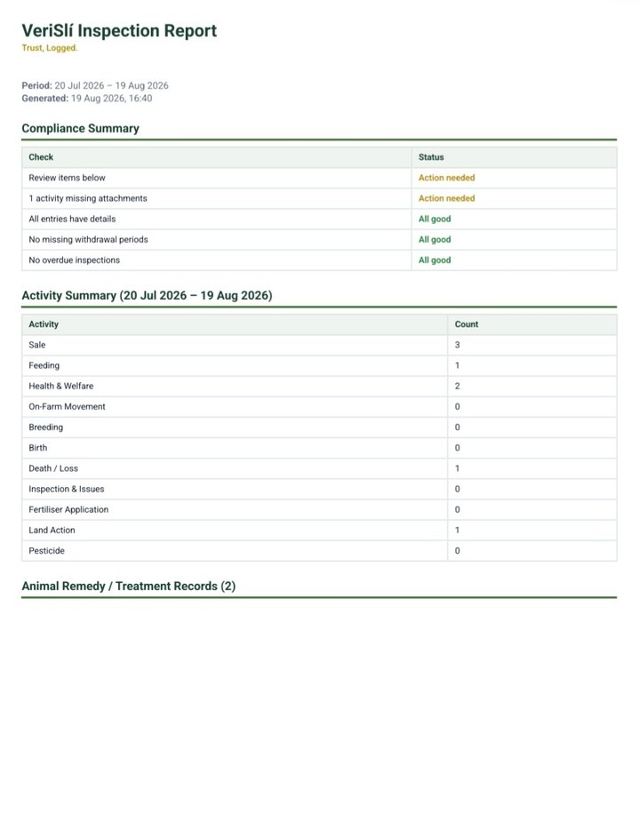
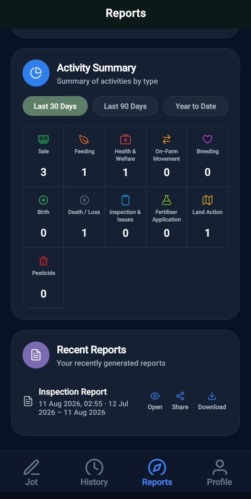

Farm records.
Ready for inspection.
Jot daily farm activities, add evidence, keep a clear history, and generate inspection-ready reports in minutes.




How VeriSlí Works
Jot
Quickly record what happened while it is fresh in your mind.
Sales, treatments, births, feeding, movements and more.
Add evidence
Attach photos and notes to support your farm records.
Keep everything together instead of searching through your phone later.
Build your timeline
Every activity is saved into a clear chronological farm history.
Generate your inspection report
Create a clear report from your records when inspection time comes.
VeriSlí was built after seeing how much time farmers lose chasing paperwork and evidence before an inspection.
Everything you need. Built for your farm.
Record farm activities
Record sales, feeding, treatments, movements, breeding, births, losses, inspections, fertiliser, pesticide and land activity — even when there is no signal.

Keep evidence with each record
Attach photos and notes directly to the activity so the evidence is there when you need it.

Handle detailed treatment records
Record treatments, withdrawal periods and multiple animal IDs together without repeating the same entry.

Find missing information before inspection
Review your records for missing details, attachments and withdrawal information before inspection day.
Generate a clear inspection report
Preview, share or download a clear PDF report built from your farm records.


One price. No surprises.
- 30-day free trial
- Cancel anytime
- No hidden fees
- All features included
One simple plan.
Designed to keep farm records simple without complicated packages or feature tiers.
Frequently Asked Questions
Does VeriSlí work without internet?
Yes. VeriSlí is designed for real farm conditions. You can record activities while offline and sync them when an internet connection becomes available.
Is VeriSlí designed for Bord Bia inspections?
VeriSlí is designed to help farmers keep clear, organised records and prepare the information they may need for inspections. It is not affiliated with or endorsed by Bord Bia.
Can I use VeriSlí for multiple animals?
Yes. VeriSlí supports farm records involving individual animals and multiple animals where appropriate.
Can I add photos to my records?
Yes. Photos can be attached directly to farm activities so supporting evidence stays with the relevant record.
Can I export my records?
Yes. VeriSlí can generate reports that can be previewed, shared or downloaded as a PDF.
How much does VeriSlí cost?
VeriSlí costs €10 per month after a 30-day free trial. There are no separate feature tiers.
Where is my farm data stored?
VeriSlí securely stores your records so they can be synced and accessed through the app. See our Privacy Policy for more information about how data is handled.
Be ready before inspection day.
Start keeping your farm records in one place today.
Need help?
We're here to help.